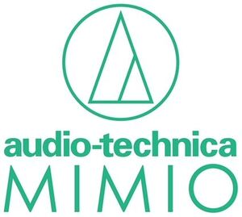

Trade Mark Journal No.2026/008 20 February 2026
WO0000001900463 (9)
Office of origin: Japan
Date of International Registration:15 October 2025
Date of designation in the UK:
15 October 2025

The mark contains the colour green.
This mark consists of a green shape and green characters. The shape consists of a circle and a stylized "A" made of triangles in the middle of the circle. The characters consist of two columns. The characters "audio-technica" are at the top, and the characters "MIMIO" are at the bottom. In this mark, the characters are arranged on the lower side of the shape. The color white represents background and is not part of the mark.
International priority date claimed: 30 April 2025
(Japan)
- Class 9
- Apparatus for power controlling and distributing; electric sockets, plugs and other electric connections; fuses; plug adaptors; battery chargers; electrical power supplies; noise filter for wiring or power supply; apparatus for power controlling for automobiles; light control device for facilities for karaoke and their parts and accessories; stage and studio lighting control device and their parts and accessories; electrical cells and batteries; batteries for automobiles; electric wires and cables; audio cables; speaker cables; headset cables; video cables; microphone cables; lead wires; electric wires and cables for automobiles; apparatus for recording, transmission or reproduction of sound and videos; audio players; camcorders; equalizers; electric signal amplifier for audio or video; signal amplifiers; headphone amplifiers; apparatus for installing audio systems, namely, mounting racks adapted for audio systems, cable connectors for audio systems, mounting brackets adapted for audio systems; insulated electrical connectors and telecommunications cables for installing audio equipments; transmitters and receivers for optical radio transmission; headsets and their parts and accessories; headphones and their parts and accessories; earphones and their parts and accessories; cases for earphones; cases for headphones; microphones and their parts and accessories; covers for microphones; microphone protectors; cases for microphones; microphone windscreens; microphone holders and their parts; booms for microphones; microphone stands; speakers and their parts and accessories; carrier bags for speakers; speaker mounting brackets; stands for speakers; radio transmitters and radio receivers and their parts and accessories; aerials; cable transmitters and cable receivers and their parts and accessories; record players and their parts and accessories; disk stabilizer; phono equalizers; headshells for phono cartridges; cleaning apparatus for phonograph records; phono cartridges for record players; pickups for record players; tone arms for record players; needles for record players; record player turntables; parts and accessories for apparatus for recording, transmission or reproduction of sound and videos; telecommunication apparatus for conference system and their parts and accessories; telecommunication controlling equipment for conference system; telecommunication apparatus for conference system; voting machines for conference system; telecommunication controlling equipment for translators; loudspeakers and their parts and accessories; electroacoustic transducers; parts and accessories for telecommunication machines and apparatus; electric signal amplifier for audio and video; audio, video selectors; audio, video dividers; audio mixers; video mixers; video processors; sound signal converters; sound signal transports; sound signal transmitters; telecommunications apparatus for automobiles; audio equipments for automobiles with sound-absorbing properties; audio equipments for automobiles with sound insulation; audio equipments for automobiles with heat sensors and regulators; audio equipments for automobiles with vibration damping properties; soundproof audio equipments for automobiles; waterproof audio equipments for automobiles; electric and electronic effects units for audiovisual equipment; electronic data processing machines, apparatus and their parts; noise filters for telecommunication machines or for electronic machines; electronic audiovisual and telecommunication machines for automobiles and their parts; computer software for recording, transmission and reproduction of sound and videos; telecommunication machines and apparatus; computer software for editing of sound and videos; computer software programs; application software; downloadable computer software; application software for audio apparatus; computer software for controlling the operation of audio and video devices; virtual reality headsets; personal digital assistants; downloadable electronic game programs; game programs for arcade video game machines; game programs for home video game machines.
Audio-Technica Corporation
Representative: NISHIMURA Keiichi, c/o NISHIMURA & PARTNERS, 7th Floor, AIOS NAGATACHO,, 2-17-17 Nagata-cho,, Chiyoda-ku, Tokyo 100-0014, JAPAN